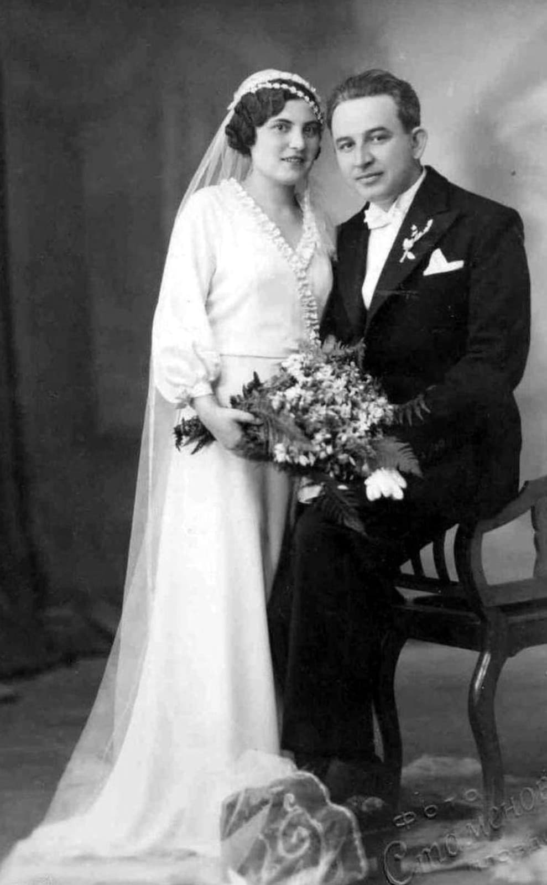

Chapelet

Objet de foi très répandu, conservé dans une poche ou la musette.
Médaille religieuse

Médaille portée autour du cou ou dans une poche, symbole de protection.
Image pieuse

Glissée dans le carnet ou le portefeuille, souvent offerte par la famille.
Photo familiale

Objet personnel très courant, gardé pour le moral et le souvenir.